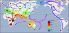

globalization

Definition: Globalization, or globalisation (Commonwealth English; see spelling differences), is the process of interaction and integration among people, companies, and governments worldwide. The term globalization first appeared in the early 20th century (supplanting an earlier French term mondialisation), developed its current meaning sometime in the second half of the 20th century, and came into popular use in the 1990s to describe the unprecedented international connectivity of the post-Cold War world. Its origins can be traced back to 18th and 19th centuries due to advances in transportation and communications technology. This increase in global interactions has caused a growth in international trade and the exchange of ideas, beliefs, and culture. Globalization is primarily an economic process of interaction and integration that is associated with social and cultural aspects. However, disputes and international diplomacy are also large parts of the history of globalization, and of modern globalization.
Source: Wikipedia
Wikipedia Page (Something wrong with this association? Let us know.)
Wikidata Page (Something wrong with this association? Let us know.)